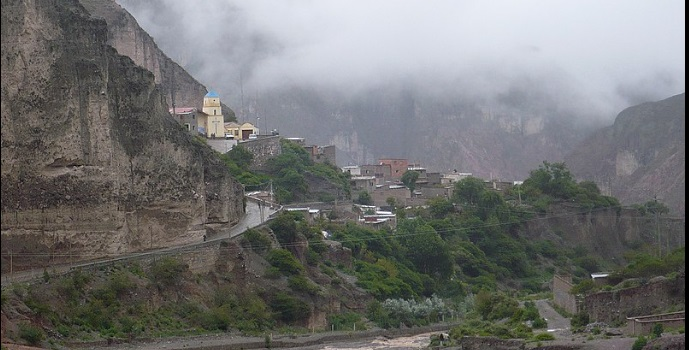
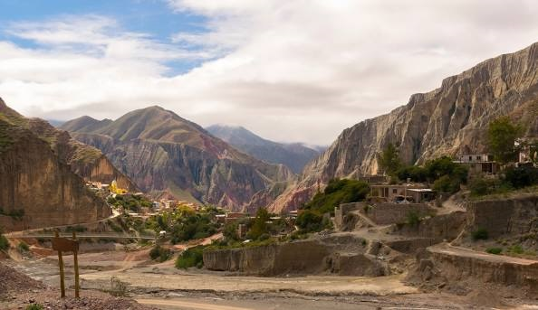
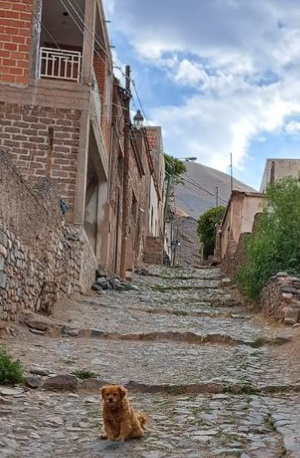
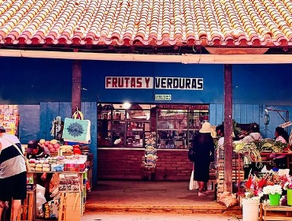
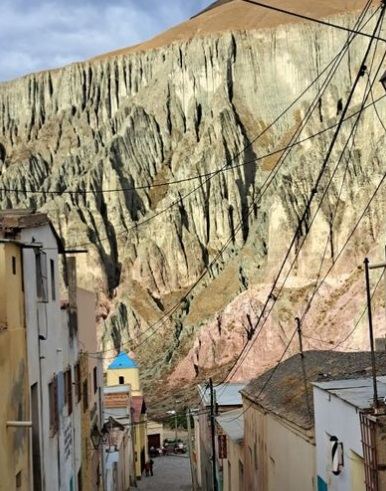
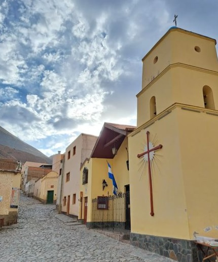
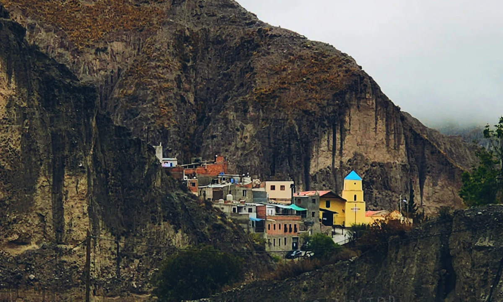

<section id="banner" class="bg-img" data-bg="IRUYA.webp" hidden >
    <!-- Estilos -->
    <style>

        .banner-container {
            display: flex;
            flex-direction: column;
            align-items: center;
            justify-content: center;
            height: 100%;
        }

        .carousel-container {
            width: 50%;
            height: 80%; /* Ajusta la altura del contenedor del carrusel según tus necesidades */
            overflow: hidden;
            position: relative;
            display: flex;
            justify-content: center; /* Centra horizontalmente el carrusel */
            align-items: center; /* Centra verticalmente el carrusel */
        }

        .carousel {
            opacity: 0.95;
            display: flex;
            transition: transform 1s ease-in-out;
            height: 100%; /* Ajusta la altura al 100% del contenedor */
        }

        .carousel img {
            border-radius: 0.5rem;
            width: 90%;
            height: auto;
            object-fit: cover;
            z-index: 1;
            margin: 0 5%;
        }

        .img {
            width: 100% !important;
        }

        @media (max-width: 767px) {
            .carousel {
                flex-direction: column;
                height: auto !important;
            }

            .img {
                height: 100% !important;
            }

            .carousel-container {
                width: 100%;
            }

            .carousel img {
                width: 100%;
                margin: 0;
            }
        }
    </style>

    <div class="banner-container">
        <div align="center">
            <!-- Contenido del carrusel ... -->
            <div class="carousel-container">
                <div class="carousel" ontransitionend="handleTransitionEnd()">
					
                    
                    
                    
                    
                    
                    
                    
										
										
										
                    <!-- ... Agrega las demás imágenes ... -->
                </div>
            </div>

            <a href="#one" class="more">Learn More</a>
        </div>


		
		<div class="">
			<h2><span class="">Iruya un pueblo único entre las mágicas sierras de Salta</span></h2>
		</div>
		
		
		
    </div>

    <script>
        let currentIndex = 0;
        let transitioning = false;
        const carouselItems = document.querySelectorAll('.carousel img');
        const totalItems = carouselItems.length;

        function showSlide(index) {
            if (index < 0) {
                currentIndex = totalItems - 1;
            } else if (index >= totalItems) {
                currentIndex = 0;
            } else {
                currentIndex = index;
            }

            const offset = -currentIndex * 100 + '%';
            document.querySelector('.carousel').style.transform = 'translateX(' + offset + ')';
        }

        function handleTransitionEnd() {
            transitioning = false;
        }

        function nextSlide() {
            if (!transitioning) {
                transitioning = true;
                showSlide(currentIndex + 1);
            }
        }

        setInterval(nextSlide, 5000);
    </script>
</section>

